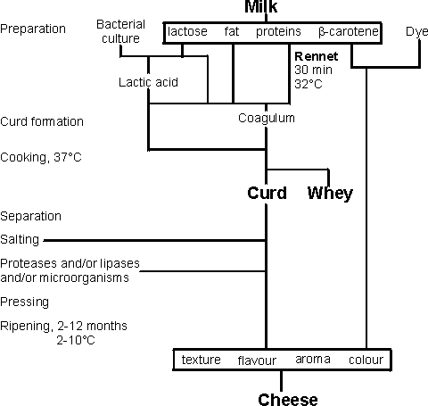

Enzyme Technology
Applications of proteases in the food industry
Certain proteases have been used in food processing for
centuries and any record of the discovery of their activity has been lost in the
mists of time. Rennet (mainly chymosin), obtained from the fourth stomach
(abomasum) of unweaned calves has been used traditionally in the production of
cheese. Similarly, papain from the leaves and unripe fruit of the pawpaw (Carica
papaya) has been used to tenderise meats. These ancient discoveries have led to
the development of various food applications for a wide range of available
proteases from many sources, usually microbial. Proteases may be used at various
pH values, and they may be highly specific in their choice of cleavable peptide
links or quite non-specific. Proteolysis generally increases the solubility of
proteins at their isoelectric points.
The action of rennet in cheese making is an example of the
hydrolysis of a specific peptide linkage, between phenylalanine and methionine
residues (-Phe105-Met106-) in the k-casein protein present in milk (see reaction
scheme [1.3]). The k-casein acts by stabilising the colloidal nature of
the milk, its hydrophobic N-terminal region associating with the lipophilic
regions of the otherwise insoluble a- and b-casein molecules, while its
negatively charged C-terminal region associates with the water and prevents the
casein micelles from growing too large. Hydrolysis of the labile peptide linkage
between these two domains, resulting in the release of a hydrophilic
glycosylated and phosphorylated oligopeptide (caseino macropeptide) and the
hydrophobic para-k-casein, removes this protective effect, allowing coagulation
of the milk to form curds, which are then compressed and turned into cheese
(Figure 4.1). The coagulation process depends upon the presence of Ca2+ and is
very temperature dependent (Q10 = 11) and so can be controlled easily. Calf
rennet, consisting of mainly chymosin with a small but variable proportion of
pepsin, is a relatively expensive enzyme and various attempts have been made to
find cheaper alternatives from microbial sources These have ultimately proved to
be successful and microbial rennets are used for about 70% of USA cheese and 33%
of cheese production world-wide.

Figure 4.1. Outline method for the preparation of cheese.
The major problem that had to be overcome in the
development of the microbial rennets was temperature lability. Chymosin is a
relatively unstable enzyme and once it has done its major job, little activity
remains. However, the enzyme from Mucor miehei retains activity during the
maturation stages of cheese-making and produces bitter off-flavours. Treatment
of the enzyme with oxidising agents (e.g., H2O2, peracids), which convert
methionine residues to their sulfoxides, reduces its thermostability by about
10°C and renders it more comparable with calf rennet. This is a rare example of
enzyme technology being used to destabilise an enzyme Attempts have been made to
clone chymosin into Escherichia coli and Saccharomyces cerevisiae but, so far,
the enzyme has been secreted in an active form only from the latter.
The development of unwanted bitterness in ripening cheese
is an example of the role of proteases in flavour production in foodstuffs. The
action of endogenous proteases in meat after slaughter is complex but 'hanging'
meat allows flavour to develop, in addition to tenderising it. It has been found
that peptides with terminal acidic amino acid residues give meaty, appetising
flavours akin to that of monosodium glutamate. Non-terminal hydrophobic amino
acid residues in medium-sized oligopeptides give bitter flavours, the bitterness
being less intense with smaller peptides and disappearing altogether with larger
peptides. Application of this knowledge allows the tailoring of the flavour of
protein hydrolysates. The presence of proteases during the ripening of cheeses
is not totally undesirable and a protease from Bacillus amyloliquefaciens may be
used to promote flavour production in cheddar cheese. Lipases from Mucor miehei
or Aspergillus niger are sometimes used to give stronger flavours in Italian
cheeses by a modest lipolysis, increasing the amount of free butyric acid. They
are added to the milk (30 U L−1) before the addition of the rennet.
When proteases are used to depolymerise proteins, usually
non-specifically, the extent of hydrolysis (degree of hydrolysis) is described
in DH units where:
(4.1)
Commercially, using enzymes such as subtilisin, DH values
of up to 30 are produced using protein preparations of 8-12% (w/w). The enzymes
are formulated so that the value of the enzyme : substrate ratio used is 2-4%
(w/w). At the high pH needed for effective use of subtilisin, protons are
released during the proteolysis and must be neutralised:
subtilisin (pH 8.5)
H2N-aa-aa-aa-aa-aa-COO−
H2N-aa-aa-aa-COO− + H2N-aa-aa-COO− +
H+ [4.1]
where aa is an amino acid residue.
Correctly applied proteolysis of inexpensive materials
such as soya protein can increase the range and value of their usage, as indeed
occurs naturally in the production of soy sauce. Partial hydrolysis of soya
protein, to around 3.5 DH greatly increases its 'whipping expansion', further
hydrolysis, to around 6 DH improves its emulsifying capacity. If their flavours
are correct, soya protein hydrolysates may be added to cured meats. Hydrolysed
proteins may develop properties that contribute to the elusive, but valuable,
phenomenon of 'mouth feel' in soft drinks.
Proteases are used to recover protein from parts of
animals (and fish) would otherwise go to waste after butchering. About 5% of the
meat can be removed mechanically from bone. To recover this, bones are mashed
incubated at 60°C with neutral or alkaline proteases for up to 4 h. The meat
slurry produced is used in canned meats and soups.
Large quantities of blood are available but, except in
products such black puddings, they are not generally acceptable in foodstuffs
because of their colour. The protein is of a high quality nutritionally and is
de-haemed using subtilisin. Red cells are collected and haemolysed in water.
Subtilisin is added and hydrolysis is allowed to proceed batchwise, with
neutralisation of the released protons, to around 18 DH, when the hydrophobic haem
molecules precipitate. Excessive degradation is avoided to prevent the formation
of bitter peptides. The enzyme is inactivated by a brief heat treatment at 85°C
and the product is centrifuged; no residual activity allowed into meat products.
The haem-containing precipitate is recycled and the light-brown supernatant is
processed through activated carbon beads to remove any residual haem. The
purified hydrolysate, obtained in 60% yield, may be spray-dried and is used in
cured meats, sausages and luncheon meats.
Meat tenderisation by the endogenous proteases in the
muscle after slaughter is a complex process which varies with the nutritional,
physiological and even psychological (i.e., frightened or not) state of the
animal at the time of slaughter. Meat of older animals remains tough but can be
tenderised by injecting inactive papain into the jugular vein of the live
animals shortly before slaughter. Injection of the active enzyme would rapidly
kill the animal in an unacceptably painful manner so the inactive oxidised disulfide
form of the enzyme is used. On slaughter, the resultant reducing conditions
cause free thiols to accumulate in the muscle, activating the papain and so
tenderising the meat. This is a very effective process as only 2 - 5 ppm of the
inactive enzyme needs to be injected. Recently, however, it has found disfavour
as it destroys the animals heart, liver and kidneys that otherwise could be sold
and, being reasonably heat stable, its action is difficult to control and
persists into the cooking process.
Proteases are also used in the baking industry. Where
appropriate, dough may be prepared more quickly if its gluten is partially
hydrolysed. A heat-labile fungal protease is used so that it is inactivated
early in the subsequent baking. Weak-gluten flour is required for biscuits in
order that the dough can be spread thinly and retain decorative impressions. In
the past this has been obtained from European domestic wheat but this is being
replaced by high-gluten varieties of wheat. The gluten in the flour derived from
these must be extensively degraded if such flour is to be used efficiently for
making biscuits or for preventing shrinkage of commercial pie pastry away from
their aluminium dishes.
Home
| Back | Next
This page was established in 2004 and last updated by Martin
Chaplin
on
8 November, 2015
|